Minishell
Before we get to minishell let's break down the library that we'll be implementing
This library is called libft
Makefile
At the top of the file we are declaring variables that can be called from later in the make file. NAME is the file it is going to produce, in this case, libft.a. INCLUDES targets the includes folders which are the location of the .h or header files for the C code. FLAGS is setting gcc compiler flags that check for extra things outside a normal gcc file_name compilation. CC is the compiler options in this case, it is gcc. OBJ are the object files that come from compiling the c files with gcc.
Next up we have functionality that is passed to the make file. When running the make file using 'make' in the terminal where the file is we start with compiling all the .c files. It does this by using the % as a wild card to call all the .c files that have the same name as the .o files listed. Then it runs the $(CC) which is GCC, $(FLAGS) which is -Wall -Wextra -Werror, then $(INCLUDES) which is -I ./includes. -c is telling the compiler to not link any of the files it's compiling.
The next call is used to create the library file or .a file. It uses ar rc to put all the objects into the libft.a file then uses ranlib to actually create a useful library file.
The clean: function is called when running make clean in the terminal. @/bin/rm -f uses the bin/bash command rm than the -f flag is to indicate it is a file it is deleting, not a repo. Then it cleans all files listed in the OBJ variable. fclean: does the same thing except it also removes the .a file or library file that was compiled with it as well. Running the re: command essentially calls fclean to clear out the object files as well as the .a file created, then calls all: to recompile the program from the top down.
The .phony is used in case someone tries to pass functions calls as parameters to the make file. It'll make it so that way it is ignored or not picked up.
At the end of this, we end up getting a libft.a file that we can use in other make file configurations to access the library of functions we have without having to have all the .c files together in a single place.
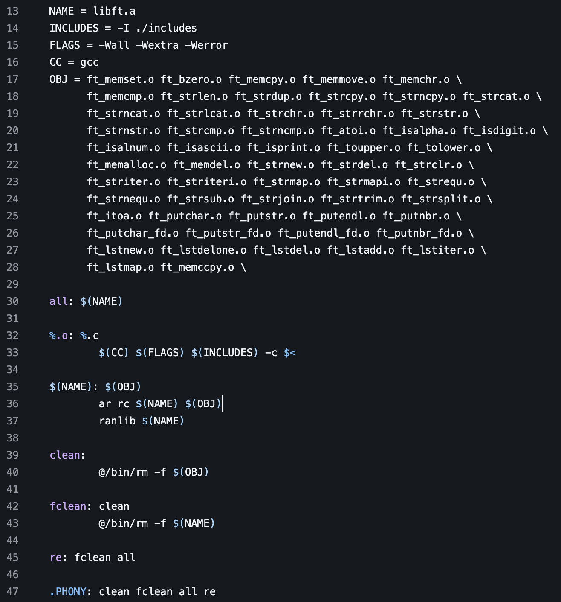
ATOI
Here we have the ft_atoi function. This function takes in an array of characters then converts them to a integer. The parameter is an array of characters defined by the *str called str. Two variables, a long called result as well as an integer called sign, are declared on top. They are then initialized to 0 than 1 before starting the first while loop.
The first while loop here iterates through the array of characters str. Using the pointer symbol here, it is checking for blank space ' ' or any of the character codes between 8 or 13 in the ascii table decimal format. Most of these are newlines, tabs or other spaces that are parsed out of a string before getting to the number characters that are also utilized by the actual atio function in the c string lib.
After that, it checks for a - or + character in the array to see if it is a positive or negative number. If no a - or + character is present, it assumes it is positive, leaving the integer sign to 1. If there is a — character, it changes the sign to -1 to make sure it returns a negative number once converted. It then iterates up through the array charters to start checking numbers.
The final while loop runs as long as the pointer in the string it is referring to is within the '0' or '9' character set as well as it not being null or '/0'. It then converts the value with a base 10 conversion using Ascii table values. It sets the first character — '0', which holds a ascii table value of 48. The character 1 holds an ascii value of 49. For instance, we have the character array '19' it is essentially taking 0 * 10 + 49 - 48 to get 1. Then it takes 1 * 10 + 57 - 48 to get the number 19 which is stored in the long result.
The final return value is multiplied by the sign to return the final value that is parsed from the string passed as the parameter *str.
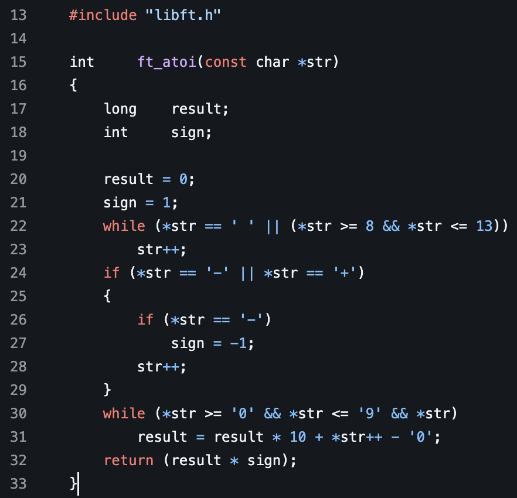
bzero
Here we take in 2 parameters. A void variable called *s which is a pointer to the location in memory a particular variable is stored at, then a size_t called n. size_t is an unsigned integer representing the length of an array. We then use the ft_memset function that we shall cover later. It is essentially setting the memory of the pointed s to zero.
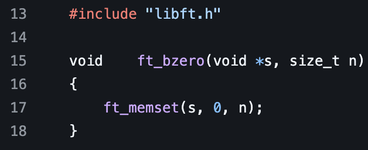
isalnum
This function takes in an integer c then states if it is an ascii value that would represent a character of 0 - 9, a - z, or A - Z. it returns 1 if it does, otherwise, it returns 0
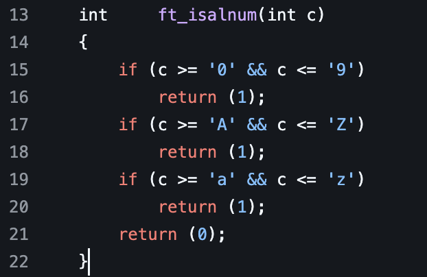
isascii
This function returns a 1 if the integer is within the range of the ascii table, otherwise it returns 0
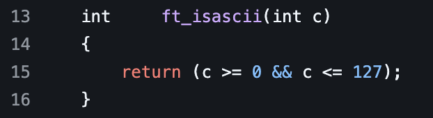
isdigit
returns a 1 if the value of c is between '0' or '9' relative to the ascii table
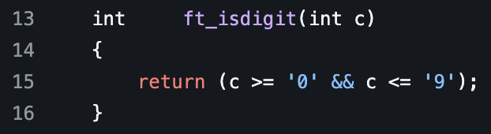
isprint
returns a 1 if the value of c is a printable character within the ascii table, otherwise a 0 is returned
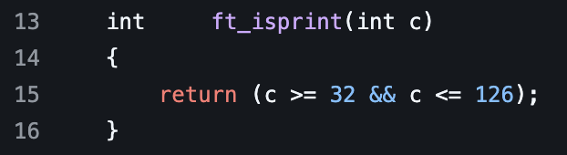
itoa
This function is used to convert an integer into a character array. First we create three variables. A character array called str, an integer called i, then a long called num. Next, we sent num equal to n by casting a long variable on the integer. Then we use a function from the stdlib called malloc to allocate memory to the character array we initialized. We typecast a character array by using (char *) before calling malloc. We then set the amount of memory to malloc by calling the sizeof(char) * len(n) + 1. We use a + 1 to ensure room to add the '0\' null pointer to make sure we end the character array.
The len functino takes a parameter call n. Then we initialize an integer called i. We then set i equal to 0. Next we check to see if n is less than zero to see if it is a negative number. We iterate i here to account for the extra space needed to store the '-' sign in the character array. We then turn n into a positive number. Next, we check if n is equal to 0. if it is we again increment i to account for that character in the new character array. Next, we run a while loop on n while dividing it by 10 in order to figure out how many spaces or characters are going to be needed in order to properly allocate the necessary memory for the new character array that is going to store the text value of the number. After we return i which has the length of the new character array needed to properly allocate storage for it.
Next, we do some error handling in case we get a null return, we exit the function while returning 0. None of the remaining code should be executed. Next, we set i equal to the length of the number. Check again if the number is negative. If it is, we make it positive while setting the first character in our array to '-'. Then if the number is zero, we then set the first character in our array to 0. Then we increment back from i. Next we run a while loop on num. We are then setting each index in the str array to the corresponding value of (num % 10) + '0'. Then divide num by 10. Say we have the number 123. First (123 % 10) + '0' turns into 3 + '0' giving it the value of '3' or 51 as the last character. Next, it does (12 % 10) + '0' turns into 2 + '0' giving it the value of '2' or 52 for the character behind it. Finally, it'll get (1 % 10) + '0' turns into 1 + '0' giving it a value of '1' or 51 for the final character.
Lastly, we have str[len(n)] set the very last character to a '\0' or a null pointer to finish off the string, which is now '123\0' then returning the character array
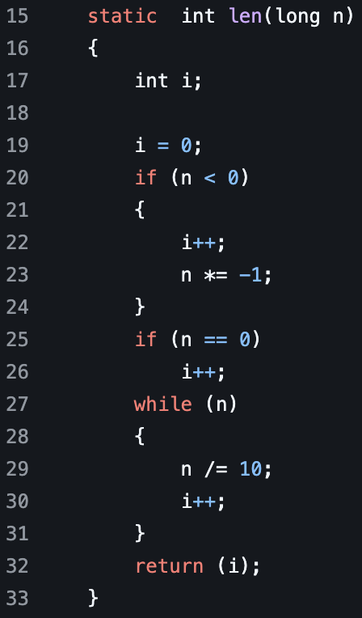
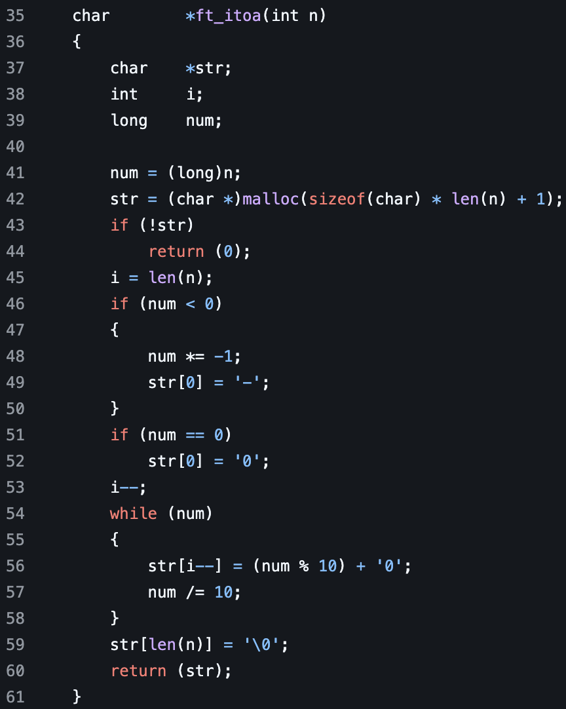
lstadd
This function is used to add an item to a linked list in C. First we pass a pointer to an array of t_list. t_list is a struct defined in the header file libft.h. We then pass a pointer to another struct called new.
First we error handle by making sure new is not null when passed. Next, we then set new to the next iteam in the passed list alast. Then we also equal to the new list with the added information.
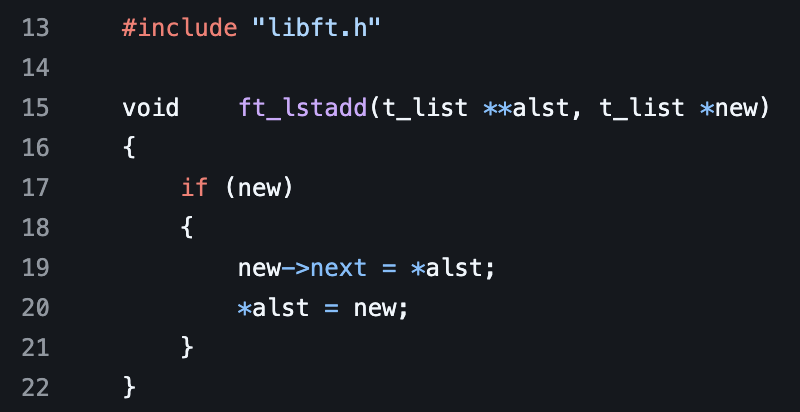
lstdel
This function first takes on 2 parameters. First a pointer to an array list of t_list. Second, a pointer to the location of data within the struct along with the size of the data. It then initializes a pointer to a struct called current, then next. After current is set to the pointer of the array list of structs passed in the parameters. Next it loops through the array list of structs. First, it sets the next array list to the location of the current structs next data parameter. Then it calls the del void function passed in the parameter with the current structs content data parameter, then along with the current structs content_size parameter. Then it calls the free function on the current struct. After it sets the current struct equal to next. It does this for the entire linked list. Then, it selects the final list to 0 to return an empty or deleted array list of structs.
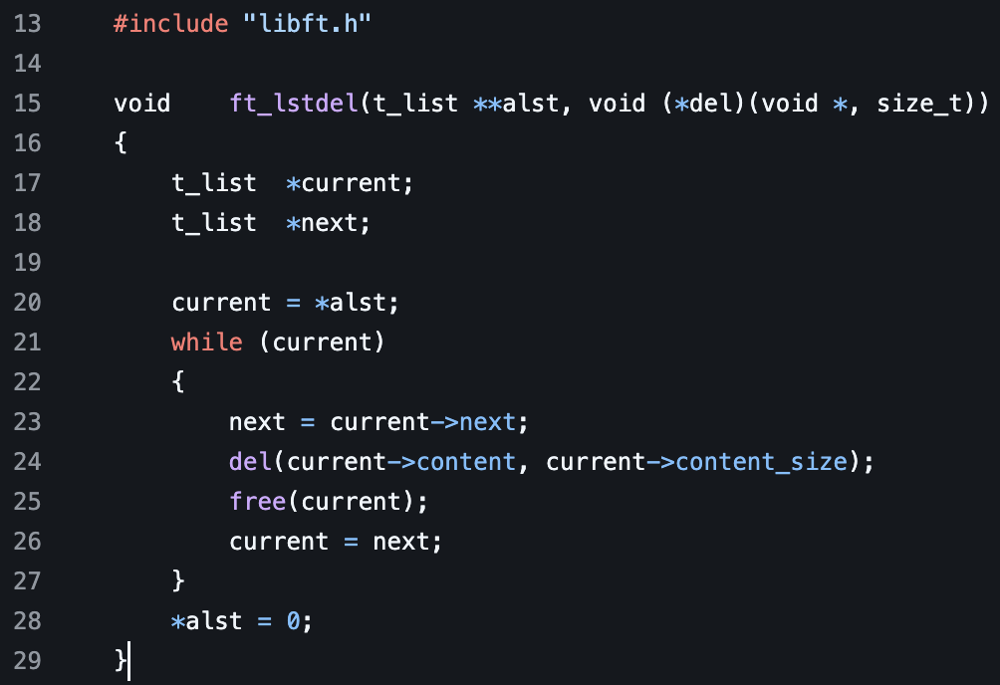
lstdelone
This function is used to delete a single struct in a linked list. If first checks to see if the linked list passed is null or if the struct it is referencing is null or if the void del function passed is null. If any of those are null, it returns stopping the function. After it calls the passed del function with the linked list struct content as well as content size as parameters, It then calls free to delete the allocated memory behind the struct's memory allocation within the linked list.
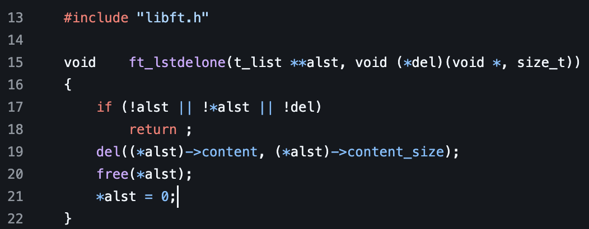
lstiter
This function performs a void function f passed on each struct within the linked list from the initial struct passed in the first parameter. The function loops while no elements are null. It then executes the function on the element. It then sets the struct pointer equal to the next data in the struct, which is a pointer to the next element in the linked list.
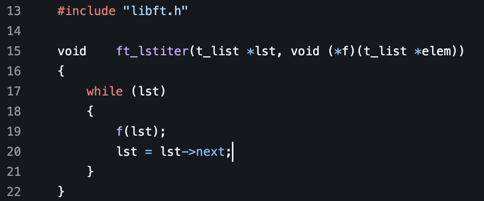
lstnew
This function is used to add a new element to a linked list. First it takes the pointer to the data it wants to add. Next it takes the size of the data it is going to add. It then initializes a struct called newlist. Next it initializes a pointer called stuff. It then sets the pointer of stuff to the content passed in the parameter above. Next, it allocates memory for a new element to be added with the type casting of a pointer to an element along with it multiplied by the content size. After it error handles to make sure the newlist is not null. If it is, it returns 0 while exiting the function. Then, it sets the newlist content data to a memalloc block of allocated memory with the size passed to it. It then checks to see if the new content was null. If so, it sets the data in the newlist struct data content to 0 as well as the current size to 0. Otherwise, it sets the newlist->conent to a copy of what was passed in the parameter as void const *content. After it updates the content size to the content_size passed a parameter. After, it sets the next value in the struct to 0 which puts an end to the link list.
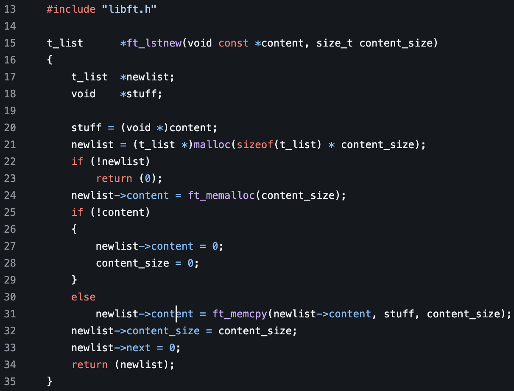
memalloc
This function returns a pointer to a malloced size of memory. It takes a size to know how much to malloc for. It then initializes a pointer of data called block. The block is then allocated the amount of memory passed in by size. It then does error handling to make sure the block didn't return null. Then, the ft_bzero function is called with a reference in memory to the pointer of block along with the parameter size. This sets the memory of each spot in the data to 0.
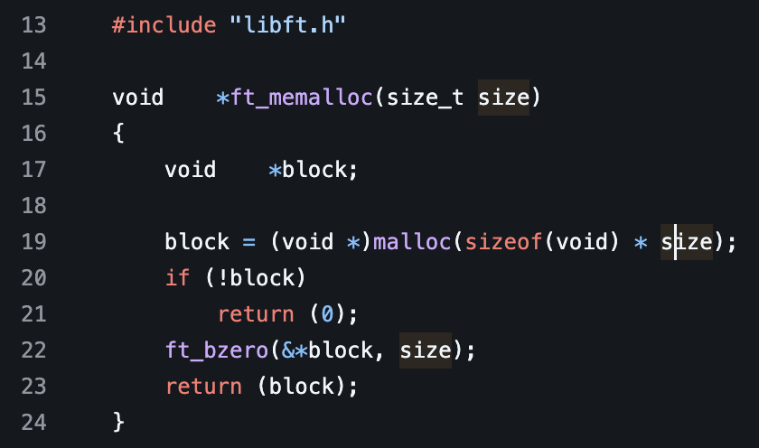
memccpy
First we take in 3 different parameters here. A pointer called dst, another const pointer called src, an integer c, than a size_t n. We then start looping with n being implemented back 1 value. This loop functions while n is not equal to 0. Next, we typecast an unsigned char pointer to the src pointer. An unsigned char is essentially a number that can not be less than 0, it has to remain positive. We then set the pointer equal to the src pointer passed in the parameters. If at any point the src pointer is equal to the int c we passed, we return the dst pointer while stopping execution of the while loop. Otherwise, if n runs out or hits 0, we then return 0 from the function.
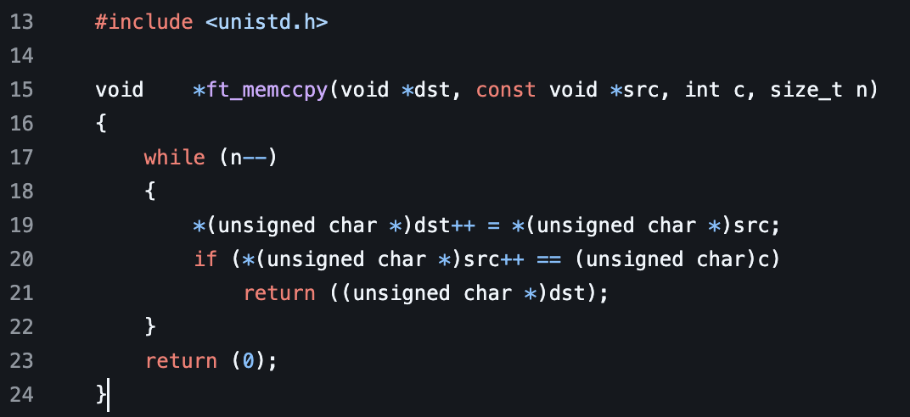
memchr
We take in 3 parameters: one a const pointer named s, an integer named c, then a size_t named n. After we start an iteration through the size_t n. After we typecast an unsigned char pointer to the pointer that was passed as s then check if it is equal to the integer c that was passed. If it is, it returns the pointer. Otherwise, it increments the pointer passed using s++ to check the next value. If n runs to 0 then the while loop stops with the function returning 0.
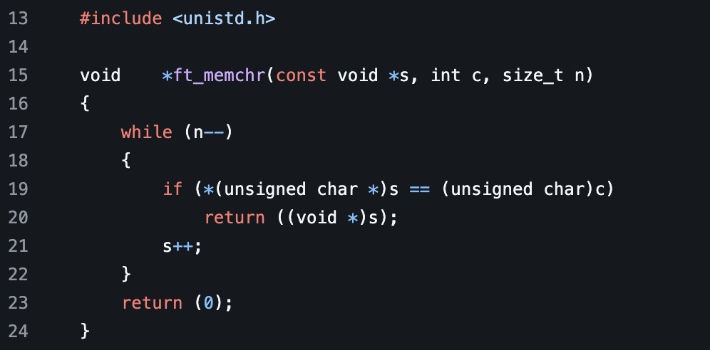
memcmp
This function again takes 3 parameters. Two pointers called s1, s2 than a size_t called n. If loops as long as n is not zero. While looping, it casts an unsigned char pointer to s1 as well as s2 while checking if at any point these values do not equal one another. If they do not, it returns the value of s1 subtracted from s2. Otherwise, it increments s1 than s2 than subtracts from size_t n. If n reaches zero, the while loop stops with the function returning 0.
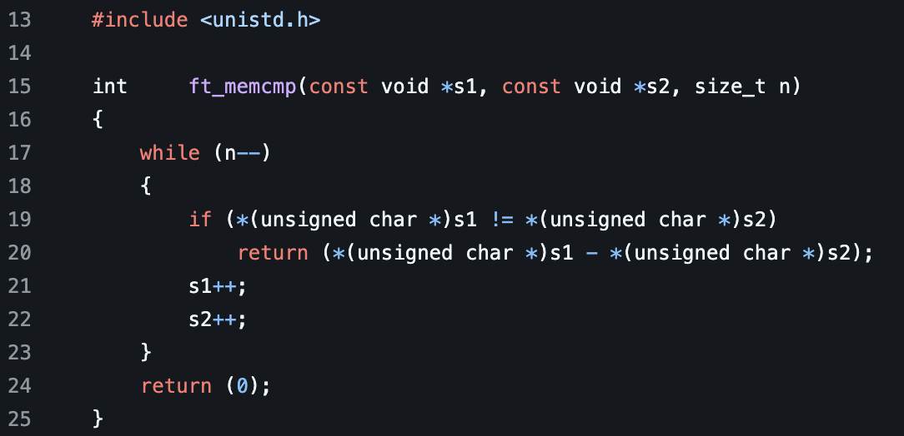
memcpy
This function takes three parameters. Two pointers dst and src rather than size_t n. We declare a new pointer called ret. We then initialize the value of ret to the dst pointer passed in the parameters. We then iterate through n. We then set the pointer dst equal to the pointer src while typecasting an unsigned char pointer to each. After we return ret which has successfully copied the values of the src pointer.
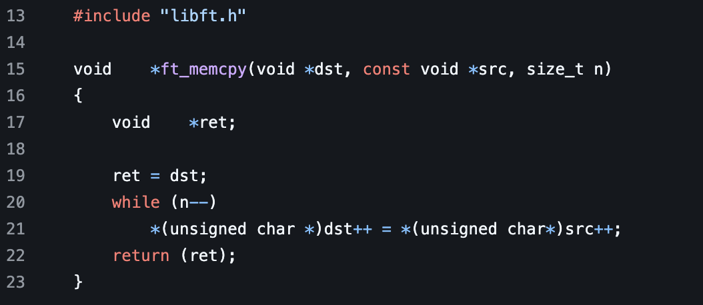
memdel
this function taps a pointe to an array. It then sets ap equal to 0. After, it calls the free function to unallocate the memory from the pointer passed in the parameter.
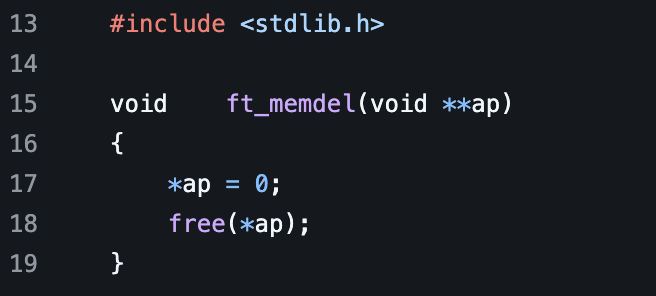
memmove
this function takes 2 pointers along with a size_t len as parameters. It also returns a pointer. First we declare another pointer called new. We then set the value of this to the pointer dst passed in as a parameter. After we check if the dst pointer is less than the src pointer. If it is, we run a while loop while the dst subtracted new is less than the len passed in as a parameter. While this condition is met, it sets dst equal to src while typecasting an unsigned char than incrementing after with the ++ on the end. If the dst is greater than the src passed, it then runs a while loop that subtracts from len while len is greater than 0. In this loop, it sets the dst index at len equal to the src indexed at len to similar values while typecasting an unsigned char than incrementing len till it is 0. This makes sure if the dst is less than source it what it can otherwise it cops the entire length of what is passed. After these conditions, it then returns new which is the same pointer in memory as dst.
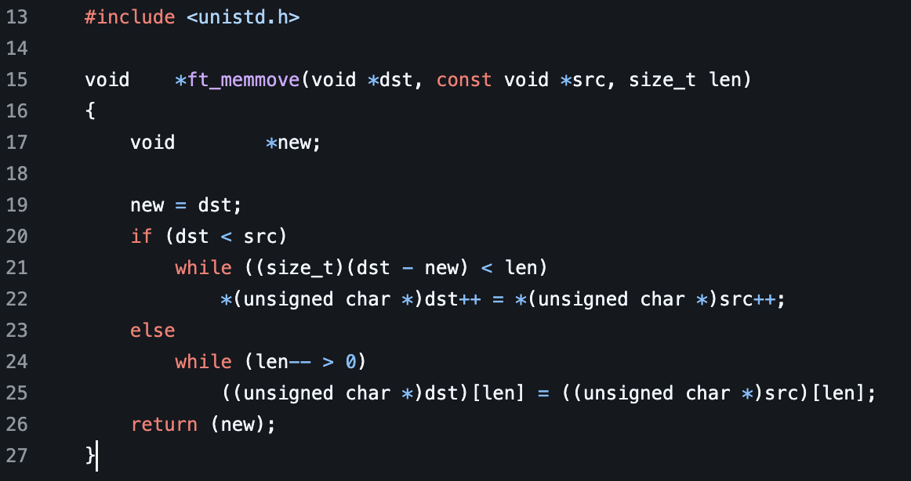
memset
This function takes three parameters: one pointer b, and integer called c, then a size_t called len. First we declare an unsigned character called x. Then we set this character equal to b. Then, we loop through len while it is above zero. We set the character equal to the integer c passed while typecasting it to an unsigned char. We also iterate x. After we return the passed pointer b as it reflects x.
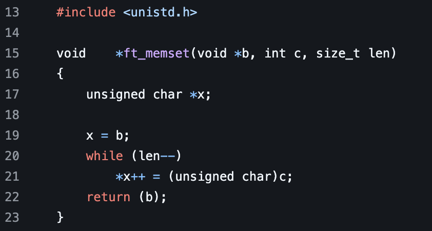